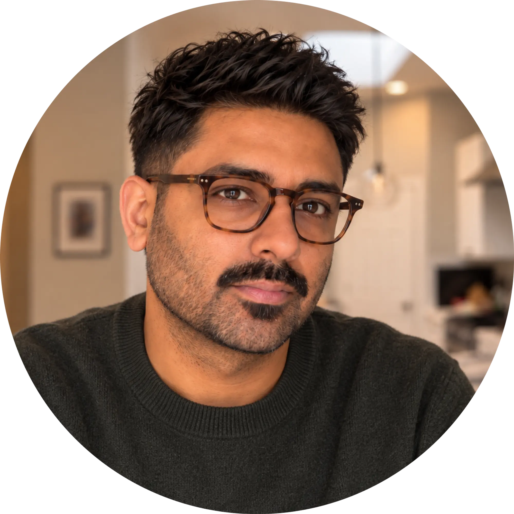

Design leader blending strategy, storytelling, and good taste. From enterprise AI tools to ice cream brands, I build experiences that delight.
I’m a Dallas-based senior product and brand designer with 10+ years of cross-disciplinary design experience. Right now, I’m an Experience Designer at Allata, where I design B2B enterprise and AI tools for healthcare, global tax firms, and others.
I’m also the co-founder and creative lead at Creamwala, a premium ice cream brand that weaves together design, food, and cultural storytelling. I built the brand from the ground up: flavors, voice + tone, packaging, and aesthetic, drawing from the experience of growing up as a Pakistani-American and wanting to build something that finally felt like us. I’m now in the phase of designing and building out our first flagship store.
I studied advertising at DePaul University in Chicago, then completed a UX certification at SMU after moving to Texas. My design sensibility is shaped by tastes in art, interiors, film, music, and food. I care a lot about simplicity and what design makes one feel, not just how it looks.
I also wrote and illustrated a coffee table book called Little Bites of Urdu, combining my love for food, art, and the Urdu language.
Thanks for being here. If you want to chat, feel free to reach out! I’m always down for good coffee, virtual or in person.